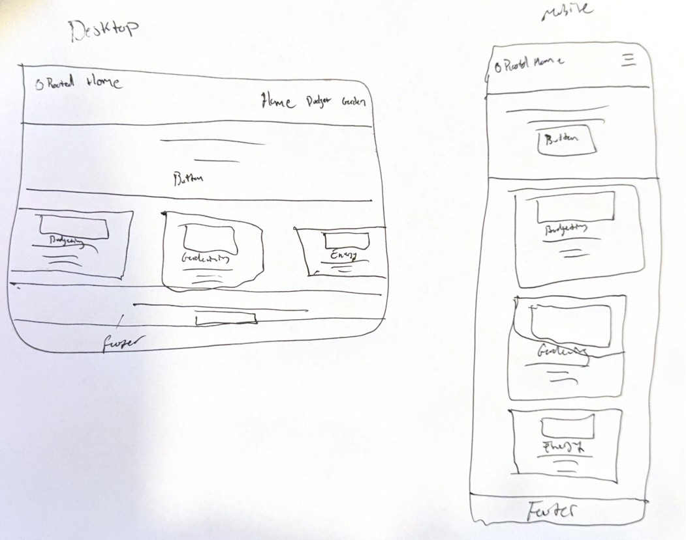

Site Name
Rooted Home
This name reflects the site's focus on growing roots in two senses — literally, through home gardening, and figuratively, through building a financially and practically self-reliant household. It's grounded rather than clinical, fitting a site about budgeting, growing food, and reducing energy costs.
Optional domain availability: rootedhome.org
Site Purpose
Rooted Home provides practical, actionable resources for households looking to reduce costs and build self-reliance. The site will cover household budgeting strategies, home gardening as a way to lower grocery costs, and home energy efficiency improvements — giving visitors a single hub for cutting expenses and becoming less dependent on outside systems for day-to-day needs.
Scenarios
- What vegetables are easiest to grow for a beginner trying to cut their grocery bill?
- How can I lower my home energy bill without a large renovation budget?
- Is there a simple way to track how much money these changes are actually saving me?
Color Scheme
#2F5233
Headings, header background, primary buttons
#C1662F
Accents, links, hover states, call-to-action highlights
#F7F1E3
Page background
#3B2E23
Body text
Typography
Roboto — used for all headings (h1–h3). I love the name of this font!
Roboto — used for body text, labels, and navigation. If it ain't broke, don't fix it!
Wireframe
Hand-drawn wireframe sketches for the home page.
